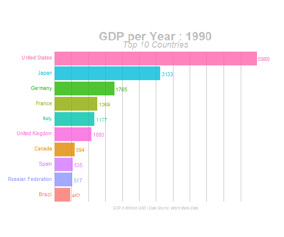

Bar Chart Race
Bar Chart Race is an useful way to display time series in bar chart format via animation. Here is an example of Bar Chart Race. 
Learn from the R-bloggers website.
Data Wrangling
What we need to do is summarize each single complaint information by complaint type and year.
Load the libraries
## Warning: package 'gganimate' was built under R version 4.0.3##
## Attaching package: 'gganimate'## The following object is masked from 'package:raster':
##
## animate## Warning: package 'gifski' was built under R version 4.0.3Read the data and do the summarize
BarData <- read.csv("I://FinalProject/data/A2C_DATA_tbl_1.csv",header = T)
BarData_tbl <- as_tibble(BarData)
BarData_tbl <- BarData_tbl %>%
select(COMPLAINT.ID,COMPLAINT.TYPE,COMPLAINT.DATE)
#Change the class of DATE
BarData_tbl$COMPLAINT.DATE <- as.Date(BarData_tbl$COMPLAINT.DATE)
#Do the summarize
BarData_tbl_1 <- BarData_tbl %>%
mutate(YEAR = as.integer(format(COMPLAINT.DATE,"%Y"))) %>%
filter(YEAR <= 2019) %>% #Data in 2020 is not comprehensive
group_by(YEAR,COMPLAINT.TYPE) %>%
summarise(COUNT = n())## `summarise()` regrouping output by 'YEAR' (override with `.groups` argument)Check the result
Rank the Data within top 10
Animation
anim <- ggplot(Bar_Formatted, aes(RANK, group = COMPLAINT.TYPE,
fill = as.factor(COMPLAINT.TYPE), color = as.factor(COMPLAINT.TYPE))) +
geom_tile(aes(y = COUNT/2,
height = COUNT,
width = 0.9), alpha = 0.8, color = NA) +
geom_text(aes(y = 0, label = paste(COMPLAINT.TYPE, " ")), vjust = 0.2, hjust = 1, size = 5) +
geom_text(aes(y=COUNT,label = COUNT_lbl, hjust=0),size = 8) +
coord_flip(clip = "off", expand = FALSE) +
scale_y_continuous(labels =scales::comma) +
scale_x_reverse() +
guides(color = FALSE, fill = FALSE) +
theme(axis.line=element_blank(),
axis.text.x=element_blank(),
axis.text.y=element_blank(),
axis.ticks=element_blank(),
axis.title.x=element_blank(),
axis.title.y=element_blank(),
legend.position="none",
panel.background=element_blank(),
panel.border=element_blank(),
panel.grid.major=element_blank(),
panel.grid.minor=element_blank(),
panel.grid.major.x = element_line( size=.1, color="grey" ),
panel.grid.minor.x = element_line( size=.1, color="grey" ),
plot.title=element_text(size=30, hjust=0.5, face="bold", colour="grey", vjust=-1,line = 2),
plot.subtitle=element_text(size=18, hjust=1, face="italic", color="grey"),
plot.caption =element_text(size=12, hjust=0.5, face="italic", color="grey"),
plot.background=element_blank(),
plot.margin = margin(1,3, 1, 13, "cm")) +
transition_states(YEAR, transition_length = 4, state_length = 1, wrap = FALSE) +
view_follow(fixed_x = TRUE) +
labs(title = 'Envrionmental Complaints in Chicago : {closest_state}',
subtitle = "Top 10 categories",
caption = "Data Source: California Department of Public Health") Save it as gif
animate(anim, 600, fps = 30, width = 1920, height = 1080,
renderer = gifski_renderer("gganim4.gif"), end_pause = 15, start_pause = 15)Here is the result! 
We can find that the Noise and Air pollution are the consistently higher problems.